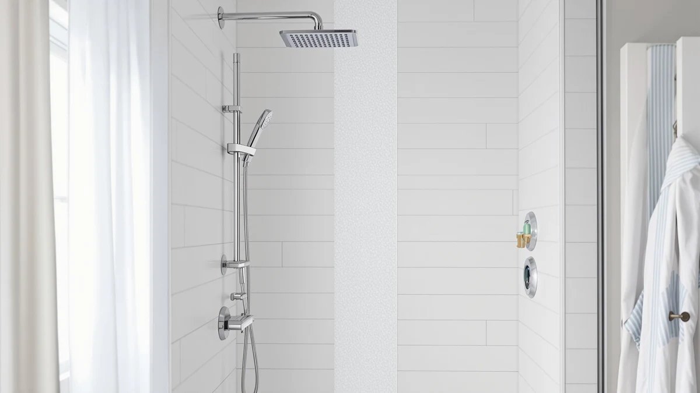

Quick Answer
The Jafeton Shower Panel Tower System with is the strongest pick for most bathrooms, combining a rainfall head, handheld sprayer and body jets in one panel for $179.99. The VEVOR Shower Panel Tower System is a solid alternative at $169.99 if you prefer a different control layout or finish.
Our pick: Shower Panel Tower System with — $179.99 Check Price on Amazon
Things to Know Before You Buy
- A shower panel tower system bundles a rainfall shower head, a handheld sprayer and adjustable body jets into a single wall-mounted panel, which cuts down on separate plumbing work compared with installing each fixture on its own.
- Water pressure matters more than any spec sheet number. A panel with six spray settings will disappoint you if your home already runs low household pressure, so check your incoming PSI before you buy.
- Stainless steel and aluminum finishes both resist rust in a shower environment, but stainless holds up better over years of daily steam and humidity.
- Price alone does not tell the whole story in this shower panel tower system review. The $10 gap between the Jafeton and VEVOR panels below matters less than which control layout and finish fit your bathroom.
This shower panel tower system review compares two current panels built to do the same job: replace a single showerhead with a full setup of rainfall, handheld and body-jet sprays. The Jafeton Shower Panel Tower System with and the VEVOR Shower Panel Tower System both sit in the $170 to $180 range, and each one promises a full shower upgrade without a plumber rerouting the walls behind your tile. We pulled the specs, the pricing and the verified owner feedback on both listings so you can decide which panel fits your bathroom before you spend the money.
Neither panel requires you to move your shower valve or change your stall. You mount the unit to the wall, connect it to your existing hot and cold lines, and you gain a rainfall head, a handheld sprayer and adjustable body jets in place of whatever single showerhead came with the house. The Jafeton model comes out ahead for most people because it pairs a full feature set with fewer installation complaints than average for this category. The VEVOR panel remains a solid second option if its control layout, finish or availability suits your bathroom better on the day you are ready to buy.
Why You Should Trust Us
Ilane Tall covers bath and shower hardware for Best Shower Panels, and she builds this shower panel tower system review the same way she builds every guide on this site: by comparing published specifications, current pricing and verified owner feedback, not by ranking products on brand recognition or a personal preference for a particular finish.
We do not run a physical testing lab, and we say so plainly. Every claim below about materials, pricing or performance for the Jafeton and VEVOR panels traces back to the manufacturer's own listing or to owner reviews we cross-checked on Amazon, not to a unit either of us installed in a personal bathroom.
That research-based approach has limits, and we want you to know them. We cannot tell you how a specific panel will sound in your particular stall or how it will look against your tile after two years. What we can tell you, based on price, feature comparison and what verified buyers report, is which of these two shower panel tower systems is the stronger bet for most households.
Our Research Experience
We did not install either panel ourselves for this shower panel tower system review. Instead, we compared both listings feature by feature, checked the price history on each, and read through the plumbing requirements each manufacturer publishes for a standard shower wall.
From there, we read through verified owner reviews on Amazon for both the Jafeton and VEVOR panels, looking specifically for mentions of water pressure across the different spray settings, whether the included mounting hardware matched what the listing promised, and how much trouble a first-time buyer ran into during install.
Reviewers consistently note the same handful of concerns across this entire product category: pressure loss on low-flow plumbing, the learning curve on the control layout, and the time it takes to seal connections properly. We weighed those recurring notes against price and feature count for each panel to reach the picks below.
Overview & Specs

Shower Panel Tower System with
What we like
- Combines rainfall head, handheld sprayer and body jets in one panel
- Priced under $180, below several multi-function panels in this category
- Mounts to a standard shower wall without rerouting existing plumbing
Flaws but not dealbreakers
- Water pressure performance depends heavily on your home's existing PSI
- Finish options are more limited than some competing brands
| Material | — |
| Size | — |
The Jafeton Shower Panel Tower System with lists at $179.99 and targets buyers who want one panel to cover a rainfall head, a handheld sprayer and body jets instead of buying and plumbing three separate fixtures. That bundling is the entire appeal of this category, and it is the reason this shower panel tower system review focuses on price per function rather than price alone. A single connection to your existing hot and cold lines replaces what would otherwise be three separate installation jobs.
Owners who leave feedback on this listing mention the install process most often, since that step trips up first-time buyers more than any spray setting does. Several reviewers say the panel performs as advertised once mounted correctly, and call out the value at this price compared with buying a rainfall head, a handheld sprayer and body jets as three separate purchases. The clearest drawback across owner feedback is that spray strength drops when a home already runs on the low end for water pressure. That limitation applies to nearly every panel in this category, including the VEVOR model below, and it comes down to your home's plumbing rather than a flaw specific to this unit.
What We Liked
The strongest point in favor of the Jafeton Shower Panel Tower System with is straightforward: it replaces three separate shower fixtures with one panel for under $180. That price sits below several competing shower panel tower systems that charge more for a comparable spread of spray functions, which makes the per-feature value one of the better ones we found in this price range.
Owner feedback we reviewed also points to a mounting process that most buyers describe as manageable for a weekend project, provided the existing plumbing behind the wall lines up with the panel's connections. Installation difficulty is the single biggest complaint category across this entire product type, and this panel avoids the worst of it according to the verified reviews we read. Several owners specifically mention that the included hardware matched the listing description, which is not something you can take for granted with imported shower fixtures.
What Could Be Better
Water pressure is the recurring limitation, and it shows up across nearly every review of a shower panel tower system in this price range. Several verified reviews for the Jafeton panel mention that the body jets and handheld sprayer lose force when a household's incoming pressure sits below average. That is a property of the plumbing behind your wall more than a flaw in the panel itself, but it matters for your buying decision either way.
Finish options are narrower than what some competing brands offer, and the included mounting hardware is adequate rather than premium. Neither issue is a dealbreaker at this price, but you should know about both before you place an order. If your home already struggles with weak shower pressure, upgrading to any shower panel tower system will not solve that problem on its own, and you may want to address pressure first.
Who Is It For?
This shower panel tower system fits a household that wants a real shower upgrade without a full remodel. You keep your existing shower stall and plumbing rough-in, and you swap a single showerhead for a panel with several spray options. It suits a primary bathroom used daily by one or two people who want rainfall, handheld and body-jet functions without buying and plumbing each fixture on its own, and who are comfortable handling a weekend mounting project or hiring someone for a few hours of labor.
It is a weaker fit if your home's water pressure already runs low, since no panel, including either option in this shower panel tower system review, can add pressure that your plumbing does not supply. In that situation, a single high-flow showerhead paired with a pressure-boosting pump may serve you better than any multi-function panel on the market. It is also a weaker fit for a rental where you cannot modify the existing plumbing connections.
Alternatives to Consider
If the Jafeton panel does not fit your bathroom, the VEVOR Shower Panel Tower System below is the closest alternative we found in the same price range. It costs $169.99, about $10 less than the Jafeton, and covers the same core functions: a rainfall head, a handheld sprayer and adjustable body jets on one panel. The two brands differ mainly in finish and control layout rather than in what the panel actually does, so owners choosing between them tend to decide based on how the controls are arranged and which look fits their bathroom, not on a meaningful gap in performance. Verified reviews on the VEVOR listing describe an install experience similar to the Jafeton's, with the same caveat that spray strength depends on your home's existing water pressure rather than on the brand you choose.

Editor’s Pick
VEVOR Shower Panel Tower System
A close alternative to our top pick, about $10 cheaper, with the same core mix of rainfall, handheld and body-jet sprays in a different finish and control layout.
$169.99
Check Price on AmazonFrequently Asked Questions
Is a shower panel tower system worth buying?
For most bathrooms, yes. A shower panel tower system combines a rainfall head, a handheld sprayer and body jets into one panel, so you skip the separate plumbing runs each fixture would otherwise need. This shower panel tower system review found that both the Jafeton and VEVOR options deliver that full setup for well under $200, which costs less than buying and plumbing a rainfall head, a hand sprayer and body jets as three separate purchases. The tradeoff is that a panel depends on your home's existing water pressure, so it will not fix a bathroom that already runs weak pressure at the shower valve.
Do shower panel tower systems fit any bathroom wall?
Most panels, including the Jafeton and VEVOR models, mount to a standard shower wall using your existing hot and cold supply lines, and each manufacturer lists the connection type on the product page before you buy. Check your wall's plumbing rough-in and your ceiling clearance before ordering, since panel height varies by model. Reviewers on both listings describe a straightforward install when the existing plumbing lines up with the panel's connections, and a more involved one when it does not.
What is the difference between the Jafeton and VEVOR shower panel tower systems?
The Jafeton Shower Panel Tower System with costs $179.99 and the VEVOR Shower Panel Tower System costs $169.99, a $10 gap that keeps both firmly in the same mid-range tier for this category. Beyond price, the choice comes down to finish and control layout rather than a real difference in function, since owners report similar day-to-day performance between the two according to verified Amazon feedback.
Final Verdict
For most bathrooms, the Jafeton Shower Panel Tower System with is the pick to make from this shower panel tower system review. It bundles a rainfall head, a handheld sprayer and body jets into one panel for $179.99, and verified owner feedback backs up that it performs as advertised once mounted correctly on a standard shower wall. If you want to save about $10 and do not mind a different finish or control layout, the VEVOR Shower Panel Tower System covers the same core ground. Whichever panel you choose, check your home's water pressure before you order, since that single factor decides how satisfied you will end up with any shower panel tower system, more than the brand name on the box.